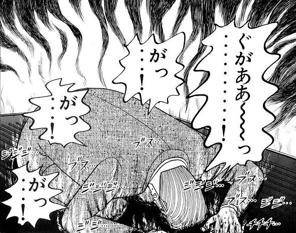

札幌 8R:3歳以上1勝クラス
13:45開始
札幌 8R:3歳以上1勝クラス
13:45開始
| 枠 | 馬番 | 馬名 | 性齢 | 騎手 | 予想オッズ |
|---|---|---|---|---|---|
| 1 | 1 | ヴァルドマルヌ | 牝4 | 横山琉 | 78.2 |
| 2 | 2 | グァルジャー | 牝3 | 角田和 | 34.5 |
| 3 | 3 | オルノア | 牝3 | 古川奈 | 7.0 |
| 4 | 4 | ノーブルマルシェ | 牝3 | 吉田隼 | 36.4 |
| 4 | 5 | イモータルフェイム | 牝4 | 丹内 | 4.3 |
| 5 | 6 | リトルポピー | 牝4 | 横山武 | 5.4 |
| 5 | 7 | フラッシングレート | 牝3 | 北村友 | 21.5 |
| 6 | 8 | マテンロウアイ | 牝4 | 今村 | 8.9 |
| 6 | 9 | タガノチョコラータ | 牝3 | 小林勝 | 5.2 |
| 7 | 10 | シャドウレディー | 牝3 | 佐々木 | 14.9 |
| 7 | 11 | ジョリーブレス | 牝5 | 鷲頭 | 103.5 |
| 8 | 12 | タマモタップダンス | 牝4 | 小林凌 | 6.3 |
| 8 | 13 | デームフォーチュン | 牝4 | 鮫島駿 | 22.2 |
まだ予測結果はありません
レース開始の30分前に更新されます
